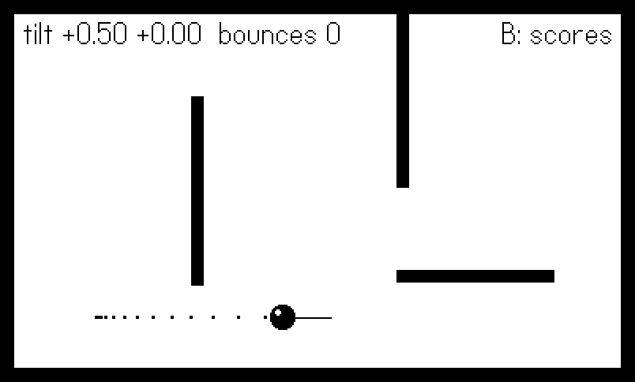
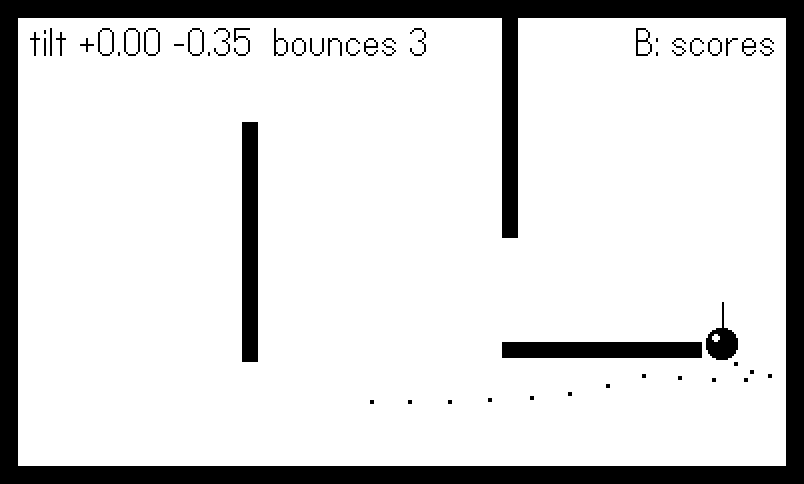
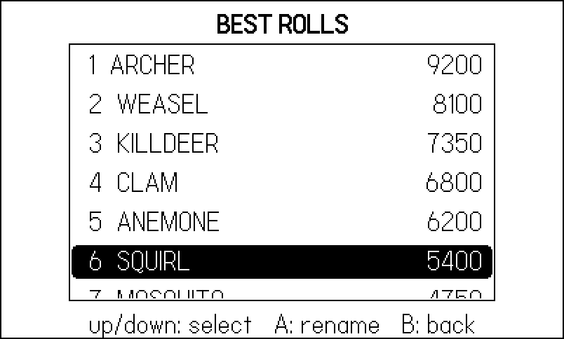

11 Tilt, Menus, and System UI
Three inputs remain, and none of them is a button. The accelerometer turns the whole console into a controller — tilt the machine and a marble rolls. The System Menu is the one piece of UI the OS owns inside your game, and it hands you exactly three custom slots plus a half-screen billboard. And when you need a string from the player, the system keyboard takes the stage. Around all of these sit the lifecycle callbacks — pause, resume, terminate, sleep, lock — that separate a polished game from one that loses your save when the battery dies.
This chapter’s example is a toy with all of it wired in: a steel marble rolling around a walled tray under accelerometer control, three System Menu items (an action, a checkmark, an options cycler), a procedurally drawn pause card, and a playdate.ui.gridview scoreboard that flips in on the B button, saved through the datastore by the lifecycle callbacks. The tilt case study is Bearing, a shipped marble-maze game whose calibration and scripted-tilt patterns this example distills.
One honest warning up front: this is the chapter where headless figures get interesting. The Simulator’s accelerometer reads the tilt sliders in its own window, which no script of ours moves, and the real pause screen belongs to the OS, which no headless screenshot can capture. Both problems fall to the same seam we have used since Chapter 9 — and watching them fall is half the lesson.
11.1 The accelerometer
The accelerometer is off by default (it costs a little power). Turn it on once, then read it each frame:
playdate.startAccelerometer()
-- ...one update later...
local x, y, z = playdate.readAccelerometer()readAccelerometer() returns the gravity vector in units of g: x positive toward the device’s right edge, y positive toward the bottom of the screen, z positive out the back of the device. Held upright it reads (0, 1, 0); flat on a table, (0, 0, 1). For a tilt-controlled game on a face-up device, x and y are simply “how much downhill is that way” — which is why the marble code below can feed them straight into acceleration. playdate.stopAccelerometer() powers it back down when you leave the tilt mode, and playdate.accelerometerIsRunning() tells you where you stand.
First, timing: the hardware needs an update cycle after startAccelerometer() before values are valid, so start it at boot (as the example does), not in the same frame you first read it — and guard the read (x or 0) so a nil from a not-yet- or never-started accelerometer cannot poison your math. Second, the Simulator: readAccelerometer() there reports the window’s tilt controls, not your MacBook’s orientation. Fine for hand testing; useless for scripts, which is what the seam below is for.
11.1.1 Reading tilt through the seam
Here is the example’s entire tilt pipeline — bot first, hardware second, then smoothing and calibration:
-- In the Simulator the accelerometer reads the window's tilt
-- sliders, which a headless run never moves -- so the bot supplies
-- tilt through the same seam the buttons use.
local function readTilt(bot)
local x = bot and bot.tiltX
or select(1, pd.readAccelerometer())
local y = bot and bot.tiltY
or select(2, pd.readAccelerometer())
x, y = x or 0, y or 0
-- low-pass: keep 80% of the old value, take 20% of the new
smoothX = smoothX + (x - smoothX) * 0.2
smoothY = smoothY + (y - smoothY) * 0.2
-- calibration: tilt is measured from the player's "flat"
return smoothX - zeroX, smoothY - zeroY
endThree layers, each earning its place:
The seam. A headless run cannot tilt the Simulator, so the figure script supplies bot.tiltX/bot.tiltY through Harness.input, exactly as Chapter 9’s script supplied button levels. (A Lua footnote makes the or-chain safe here: 0 is truthy in Lua — only nil and false fall through — so a bot tilt of exactly zero still short-circuits and never falls back to the hardware read.)
The low-pass filter. Raw accelerometer samples jitter — hand tremor, sensor noise, the odd bump. Blending 20% of each new reading into a running value (smooth = smooth + (raw - smooth) * 0.2) is a one-line low-pass filter: jitter above a few hertz averages away, deliberate tilts pass through with a few frames of lag. Raise the 0.2 toward 1 for responsiveness, lower it for calm; 0.2 at 30 fps is a good marble.
The calibration offset. Nobody plays a Playdate dead flat — players hold it tilted back at whatever angle their couch dictates. If you treat raw (0, 0) as neutral, every player starts with the marble sliding toward their lap. So the game records the smoothed reading at a known moment as zeroX, zeroY — “this is what this player’s flat feels like” — and reports tilt relative to that. The example calibrates at boot, from a System Menu item, and (a detail worth stealing) in gameWillResume, because hands always shift while a menu is open.
Two smaller accelerometer patterns round out the toolbox. Shake detection needs no new API: at rest the vector’s magnitude is 1 g, so math.sqrt(x*x + y*y + z*z) - 1 measures how hard the device is being jostled, and a threshold of around 0.5 sustained for a couple of frames is a serviceable “shake to shuffle.” Use the raw reading for this, not the smoothed one — the low-pass filter exists precisely to erase the signal a shake detector wants. And turn it off when you leave the tilt mode: the power cost is small, but stopAccelerometer() in your mode-exit path is free, and a stopped accelerometer makes stale reads fail loudly (nil) instead of feeding yesterday’s gravity into today’s menu.
11.1.2 Case study: Bearing’s readTilt
Bearing shipped this exact stack, plus the scripted-tilt trick, as one function:
-- bearing/source/main.lua:41
local function readTilt()
if AUTOPILOT then
apT = apT + 1
return math.cos(apT * 0.045) * 0.7, math.sin(apT * 0.062) * 0.7
end
local x, y = playdate.readAccelerometer()
if not x then return 0, 0 end
return (x - neutralX), (y - neutralY)
endThe autopilot branch fakes tilt as two incommensurate sine waves — a slow circular stir that rolls the marble around the whole maze — so Bearing’s smoke tests exercised ball physics, hole falls, and goal detection with the console flat on a desk. Its B button recalibrates neutralX/neutralY mid-game, which playtesting proved essential: a marble game without recalibration is a marble game people play with their necks bent.
11.1.3 Rolling the marble
The tray itself is velocity integration plus circle-versus- rectangle push-out, distilled from Bearing’s ball:
function Board.update(tx, ty)
Board.vx = (Board.vx + tx * ACCEL * DT) * FRICTION
Board.vy = (Board.vy + ty * ACCEL * DT) * FRICTION
Board.x = Board.x + Board.vx * DT
Board.y = Board.y + Board.vy * DT
for _, w in ipairs(WALLS) do resolve(w) end
-- breadcrumbs for the trail
Board.trail[#Board.trail + 1] = { Board.x, Board.y }
if #Board.trail > 45 then table.remove(Board.trail, 1) end
endTilt scales into acceleration, friction bleeds a fraction of the velocity every frame so the marble settles instead of orbiting forever, and each wall resolves by pushing the circle out along the closest-point normal and reflecting the inbound velocity component at 60% — enough bounce to feel like steel, not rubber. Figure 11.1 is the marble mid-roll, breadcrumb trail behind it and the tilt vector drawn as a line from its center; Figure 11.2 is forty-five frames later, after the script tilted the tray north and the trail bent around a ricochet.


11.3 The keyboard
For text entry — initials, save names, level codes — the system keyboard takes over: playdate.keyboard.show(initialText) slides it up over the lower part of the screen and steals input focus (your playdate.update keeps running behind it, but button presses feed the keyboard, ideal for a crank-scrolled character column). The example wires it to rename a scoreboard row:
-- Rename the selected row with the system keyboard. The keyboard
-- takes over input focus; our update loop keeps running behind it.
function Scores.rename()
local row = Scores.view:getSelectedRow()
playdate.keyboard.textChangedCallback = function()
Scores.pending = playdate.keyboard.text
end
-- the callback receives true if the player chose OK
playdate.keyboard.keyboardWillHideCallback = function(ok)
local text = Scores.pending
if ok and text and #text > 0 then
Scores.rows[row].name =
string.upper(string.sub(text, 1, 8))
Scores.save()
end
Scores.pending = nil
end
playdate.keyboard.show(Scores.rows[row].name)
endThe flow is all callbacks. textChangedCallback fires per character, with the current string in playdate.keyboard.text; keyboardWillHideCallback fires as the keyboard starts to close and receives true if the player confirmed with OK, false if they cancelled — commit on true, discard on false. (There are also keyboardDidShowCallback, keyboardDidHideCallback, and keyboardAnimatingCallback for syncing your layout with the slide, and playdate.keyboard.width()/isVisible() if you want to shrink your play area while it is up.) The scripted run never opens the keyboard — a robot has nothing to type and the figure would just be the stock OS keyboard — but the path is two button presses away from any human playing the example.
11.4 A scoreboard with gridview
playdate.ui.gridview (import CoreLibs/ui) draws scrolling grids and lists: you describe the geometry, override one drawing method, and it handles layout, selection, and animated scrolling. It is also famously fiddly on first contact, so here is a known- good list-view setup:
function Scores.setup()
Scores.load()
-- cellWidth 0 = rows span the grid's full width (a list view)
local gv = playdate.ui.gridview.new(0, 24)
gv:setNumberOfRows(#Scores.rows)
gv:setCellPadding(0, 0, 2, 2)
gv:setSelectedRow(1)
function gv:drawCell(section, row, column, selected, x, y, w, h)
if selected then
gfx.fillRoundRect(x, y, w, h, 4)
gfx.setImageDrawMode(gfx.kDrawModeFillWhite)
end
local r = Scores.rows[row]
gfx.drawText(string.format("%2d %s", row, r.name),
x + 8, y + 3)
gfx.drawTextAligned(tostring(r.score), x + w - 8, y + 3,
kTextAlignment.right)
gfx.setImageDrawMode(gfx.kDrawModeCopy)
end
Scores.view = gv
endThe fiddly parts, named:
cellWidth = 0means full-width rows. That single zero ingridview.new(0, 24)is what makes it a list instead of a grid. Forget it and you get one skinny column.drawCellis an override, not a callback you register. You definefunction gv:drawCell(section, row, column, selected, x, y, width, height)on the instance. Draw strictly inside the rect you are handed; the gridview clips nothing.- Selection is stateful.
setSelectedRow(1)at setup, or your firstselectNextRowstarts from nowhere. Navigation isselectNextRow(wrap)/selectPreviousRow(wrap)(optional extra arguments control whether and how the view scrolls to the selection), andgetSelectedRow()reads it back. - Rows are per-section and 1-based. Lists live in section 1;
setNumberOfRows(n)is the list-style convenience. - You draw it every frame.
drawInRect(x, y, w, h)renders and advances scroll animation; theneedsDisplayproperty is true when content changed, an optimization hook for static screens — but calldrawInRectevery update while animating or the scroll freezes.
Beyond flat lists, the same object scales up: give it setNumberOfSections(n) and setNumberOfRowsInSection(section, n) and rows renumber from 1 within each section; set a nonzero setSectionHeaderHeight(h) and your drawSectionHeader(section, x, y, width, height) override is called for each header (height 0 means never — another silent-fiddliness favorite). Horizontal dividers, scrollToRow/scrollToTop, and setScrollDuration(ms) for the animation speed cover the rest of a settings screen’s needs. For two-dimensional grids — inventories, level pickers — setNumberOfColumns plus a real cellWidth in the constructor turn the list back into a grid, and selectNextColumn(wrap) joins the navigation set.
A gridview earns its setup cost when content scrolls or its length varies — scoreboards, save slots, long settings. For a fixed six-item title menu, a for loop over drawText with an inverted selection bar is less code than the overrides, which is why most of the shipped games’ menus are hand-rolled. Use the tool when the scrolling is the hard part, not to draw four static rows.
The example toggles the scoreboard on B, moves the selection with up/down through the Chapter 9 snapshot (crank ticks would work the same — one selectNextRow per tick), and A opens the keyboard rename from the previous section. Figure 11.4 shows the script’s five down-taps later: row six selected, list scrolled, knockout text on the selection bar.

drawCell override.
11.5 Tying it together
The example’s update loop is worth a look before we leave it, because it shows how little glue the three subsystems need:
function playdate.update()
local bot = Harness.input(frame)
local s = gather(bot)
if s.bJust then
Game.mode = Game.mode == "board" and "scores" or "board"
end
if Game.mode == "scores" then
Scores.update(s)
Scores.draw()
else
tiltX, tiltY = readTilt(bot)
Board.update(tiltX, tiltY)
if s.preview then
drawPreview()
else
drawBoard(s)
end
end
endOne mode string flips between the board and the scoreboard on B’s edge; tilt is read (and the marble simulated) only in board mode, so the physics freezes while the player browses scores; and the pause-card preview is just a draw-path branch inside board mode, driven by bot.showPause in scripted runs or a held d-pad left in human ones. Buttons arrive through a compact version of Chapter 9’s gather() — same seam, same derived edges — which is why one shots.lua script could roll the marble, walk the scoreboard selection to row six, and pose the pause card in a single 280-frame headless run. Note also what the System Menu code does not appear here at all: items and pause callbacks were installed once at boot, and the OS drives them from outside the loop.
11.6 The rest of the lifecycle
Pause and resume you have met. Four more callbacks complete the set, and they are where saving belongs:
-- The OS gives no "save now?" prompt: write when it warns you.
function playdate.gameWillTerminate()
Scores.save()
end
function playdate.deviceWillSleep()
Scores.save()
end
function playdate.deviceWillLock()
Scores.save()
endplaydate.gameWillTerminate() fires when the player exits to the launcher; playdate.deviceWillSleep() when the console powers down from a critically low battery; playdate.deviceWillLock() / playdate.deviceDidUnlock() bracket the auto-lock that kicks in after inactivity. The OS never asks the player “save before quitting?” — your game is simply told, once, that the end is near. Writing your datastore in all three “going away” callbacks costs four lines and makes data loss structurally impossible; Chapter 17 covers what to write and how to version it.
One relative of the lock callbacks deserves a mention while you are here: the device auto-locks after three minutes without a button press or crank motion, and a tilt-only game never presses buttons — Bearing’s players would hit the lock screen mid-maze. playdate.setAutoLockDisabled(true) turns the timer off (it is automatically re-enabled when your game terminates). Disable it only in modes where input genuinely bypasses the buttons, and be deliberate about it: a game that disables auto-lock and then sits on a pause screen is a battery complaint in the making.
The tempting shortcut — save on exit — misses the two exits players actually hit: the battery dying mid-session (deviceWillSleep) and the console locking itself in a bag (deviceWillLock). All three callbacks should hit the same save function, which therefore must be cheap and idempotent.
11.7 What you know now
startAccelerometer()thenreadAccelerometer()for a gravity vector in g; smooth it with a one-line low-pass, and always calibrate a per-player neutral — recalibrating ongameWillResumeand on demand.- In the Simulator the accelerometer is the window’s tilt sliders, so scripted runs inject
bot.tiltX/tiltYthrough the same seam as buttons — Bearing’s sine-stir autopilot is the shipped proof. - The System Menu grants three items (action, checkmark, options; callbacks fire when the menu closes) and one 400x240 pause card via
setMenuImage— important content in the left 200 px, built fresh ingameWillPause. playdate.keyboardis show,text, and callbacks — commit inkeyboardWillHideCallbackonly when its boolean says OK.gridview.new(0, h)makes a list; overridedrawCellon the instance, seed the selection, and calldrawInRectevery frame.- Save in
gameWillTerminate,deviceWillSleep, anddeviceWillLock— the OS warns once and never asks.
That completes the input story: buttons, crank, tilt, and the system surfaces around them. Next, the Playdate learns to make noise — synths, envelopes, and the sound-effects module pattern.